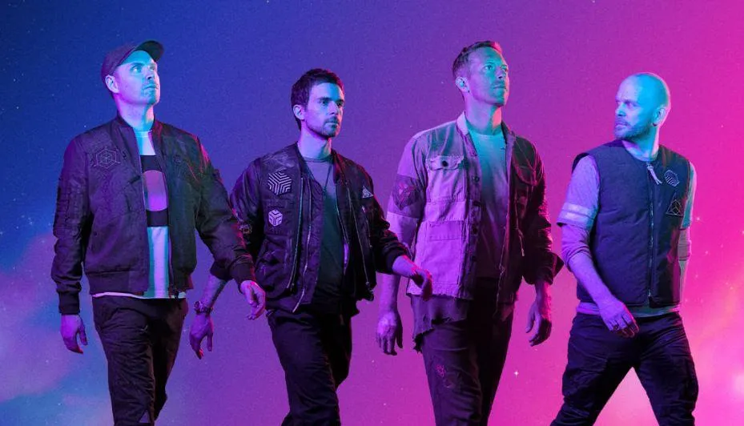

History
그룹 결성 과정
1996년 멤버들 모두 영국의 명문대학인 UCL (University College London, 유니버시티 칼리지 런던)의 기숙사에서 만나 현재의 밴드를 결성하였다. 크리스 마틴과 조니 버클랜드가 신입생 환영회 때 처음으로 만났다고 한다. 콜드플레이라는 이름의 밴드를 결성하기 전에는 'Pectoralz', 'Starfish' 등의 이름으로 꾸준한 인디밴드 활동을 했었다.
이후 친구였던 가이 베리먼이 밴드에 참여하게 되었다. 이 과정에서 크리스 마틴은 오랜 친구였던 '필 하비'를 밴드의 매니저로 영입한다. 그 이후 윌 챔피언이 합류하여 드러머 역할을 맡게 되었다. 윌 챔피언은 원래 드러머가 아니었고 드럼 연주를 하는 방법도 몰랐지만, 어렸을 때부터 다양한 악기를 배워온 덕분에 빠른 시간내에 드럼 연주를 배우게 되었다.
콜드플레이라는 이름의 유래는, 크리스 마틴의 친구가 콜드플레이라는 이름의 밴드명 사용을 고민하다가 크리스 마틴이 대신 가져다 썼다고 한다. 그 친구(팀 라이스 옥슬리 by Keane)는 콜드플레이의 키보드로 합류 하는 것을 거절하고 자신의 친구들과 따로 밴드를 결성했다.
1998년 5월 첫 앨범인 'Safety EP'를 자비로 200파운드를 들여서 500장 한정으로 제작하였다. 대부분의 앨범은 레코드 회사와 친구들에게 나누어 주었다고 한다.
1999년 4월 'Fierce Panda'레이블과 계약 이후, 3개의 곡이 들어간 'Brothers & Sisters '를 발매했다. 이 앨범은 영국 최고의 라디오 방송국인 '라디오 원'에서 방송되었고, UK차트 92위에 오르게 된다. 이로 인해 영국의 유력 음악 잡지인 NME에서 1999년의 유망 밴드들 중 하나로 지목하게 되는 등 콜드플레이는 영국 언론의 관심을 받기 시작했고, 그 뒤로 콜드플레이는 넥스트 트래비스 혹은 포스트 U2 라고 불리며 브릿팝의 신예로 주목받게 되었다. 크리스 마틴은 NME를 무심코 보다 신예 밴드 TOP20에 본인들 이름이 있는 걸 발견하고, 크게 놀라 다른 멤버들에게 'NME 봤어?'라며 전화를 건다.
이후 대형 메이저 레코드인 팔로폰(Parlophone) 레코드사와 계약을 하고, 1998년 10월 세번째 싱글앨범인 'The Blue Room EP'를 발매한다. 이 앨범 발매 직후에 라디오헤드와의 유사성으로 질타 받게 되나, 라디오헤드의 3집인 OK Computer가 발표되는 동안에 쓰여졌다는 점에서 무마되었다.
'The Blue Room EP'앨범을 녹음하던 시기에 보컬인 크리스 마틴과 드러머인 윌 챔피언과의 마찰이 있었다. 윌 챔피언은 드럼을 정식으로 공부한 적은 없었고 드러머에 사람이 없어 들어간 케이스였다. 그저 친구들끼리 만든 무명 밴드였을 땐 이런 시기를 잘 극복해왔으나 어디까지나 드러머는 본래 자리도 아니었고 땜빵에 가깝게 들어갔던 자리인 만큼 제대로 앨범 작업을 시작하고 보니 악보를 보면서 드럼을 치기 버거워했고, 앨범 관계자는 그를 탐탁치 않게 생각해 계속 나무랐다. 사정이 이렇다 보니 '윌 챔피언은 드럼을 못 친다'라는 인식이 박혀 버리고, 결국 그를 쫓아내기에 이른다.
이후 새로운 드러머 오디션을 시작했는데, 오디션을 진행하면 할수록 멤버들은 '뭔가 잘못되었다'는 것을 느끼게 되고, 결국 크리스 마틴은 윌 챔피언에게 다시 돌아와달라고 부탁하게 된다. 크리스 마틴은 이 시기를 기억하며 철이 없었던 시기이고, 아직도 그 일을 후회한다고.. 그 이후 모든 수익은 공정하게 배분하자거나, 마약, 술 등으로 피폐해진 멤버는 퇴출하자는 팀 내 암묵적인 룰이 생겼다고 한다.
이후 싱글 'Shiver'가 UK차트 40위권내에 진입하게 되었다.